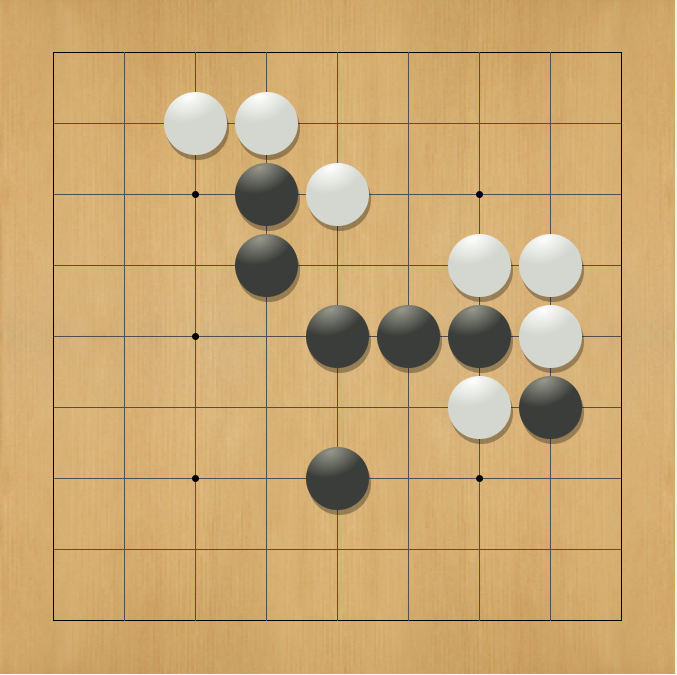

Philippe Demontigny
About Me |
|
|
Computer Science Master's Student at the University of Waterloo Email: phdemontigny [at] gmail.com I am a recent graduate from Williams College who enjoyed school so much that I decided to come back for more. I like to study interesting applications of mathematics, including computational geometry and machine learning. I also enjoy playing computer and board games, participating in Friday Night Magic, training in Muay Thai, competing in intramural squash, and learning Japanese. About This SiteThis site is where I will publish all of the papers, projects, and games I have worked on over the past few years. There's plenty of cool stuff here, so feel free to look around! I will be updating this site regularly, and am open to all kinds of feedback! |
Research and Publications
- A Characterization of Trees with Convex Obstacle Number 1 or 2 (pdf)
Philippe Demontigny, Supervisor: William Lenhart
Williams College Undergraduate Thesis. May 2014 - A Generalization of Fibonacci Far-Difference Representations and Gaussian Behavior (arXiv, source)
Philippe Demontigny, Thao Do, Archit Kulkarni, Steven J. Miller, Umang Varma
Fibonacci Quarterly, vol. 52, pp. 247-280, 2014. - Generalizing Zeckendorf's Theorem to f-decompositions (arXiv, source)
Philippe Demontigny, Thao Do, Archit Kulkarni, Steven J. Miller, David Moon, Umang Varma
Journal of Number Theory, vol. 141, pp. 136-158, 2014.
Programming Projects
Magic the Gathering Price Predictor
|
Links: paper Tech: Python, Scikit-Learn, Random Forests This project was completed as part of a graduate course in Applied Machine Learning in the Fall of 2014. I wanted to investigate the viability of using Machine Learning Algorithms to predict the price of Magic the Gathering cards using only the information contained in each individual card. In doing so, I hoped to predict which cards would be worth the most before they even become available. |
KamiGo, a Simple Computer Go AI
|  |
Links: github, paper Tech: Java, Python, Fuego, Neural Networks For my Artificial Intelligence final project in December of 2013, my partners Simon Chase, Daniel Seita, and I created a simple program that plays the game of Go over the course of about two weeks. The program uses a neural net implementation that we trained using transcripts from professional games on 9×9 boards. The final product succeeded in that it was able to learn a non-random strategy. My role in this project was to design and program the input generator, to write the script that trained the neural net, and to create a basic Go player for presentation purposes. |
Games and Current Projects
Current: Unity3D Mobile Game Development
 |
Links: Unity3D Tech: C#, GIMP I am currently developing a mobile game in Unity with the eventual goal of publishing a finished product by the end of the year. While the game is still in its infant stage, my partner and I have decided upon the theme of "Binding of Isaac meets Space Invaders." This concept was chosen because Binding of Isaac has become one of our all-time favorite games, and we would like to create a similar mobile game that takes advantage of a smartphone's touchscreen controls. How this game is related to Space Invaders, however, will remain a secret for now... |
Mind Crush, Set meets Candy Crush
|
Links: game, codeheart.js Tech: Javascript, GIMP This game was my second creation from the Machinis Ludo 48 hour game-jam in January of 2015. Inspired by titles such as Flappy Bird and Candy Crush, I modified the rules of Set to create a game that was both very challenging and very addicting. I hope to release this game as a mobile app in Google Play sometime soon. Note: All sound files were borrowed from The Lengend of Zelda: The Wind Waker, another fantastic game. |
Constellations, the Graph Theory Game
|
Links: game, codeheart.js Tech: Javascript, GIMP This game was my first significant creation from the Machinis Ludo 48 hour game-jam hosted by Professor Morgan McGuire in April of 2013. My goal with Constellations was to create a game that teaches graph theory and mathematical thinking through a series of thought-provoking puzzles. The game's main feature is the unlockable "challenge problems," many of which do not have solutions. This forces the player to prove to themselves which challenges are not solvable, as the game will never tell them. |